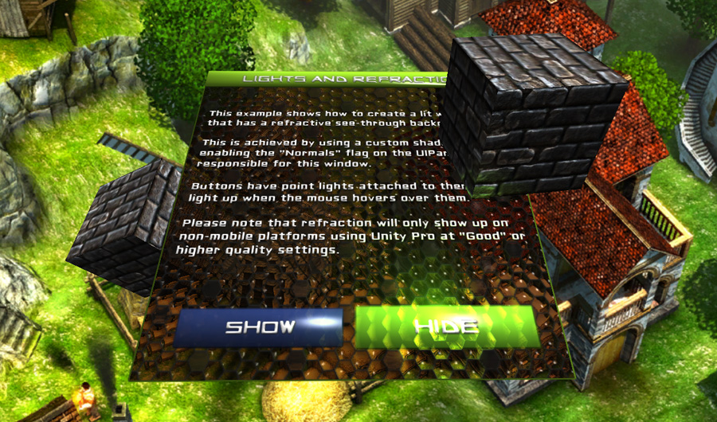

このExampleでは、シンプルに2番目のExampleから流用し、 Refractive atlas を用いてウィジェットを変更しました。このアトラスは、単に別のマテリアルを使用した SciFi Atlas のコピーです。マテリアルが点灯しているオブジェクトで動作し、通常のマッピングと同様に屈折とスペキュラのマスクマップをサポートする別のシェーダを使用しています。
デフォルトではNGUIは、法線とウィジェットの接線を生成 しません が、これは UIPanel を選択し、このExampleでは行われているか正確には適切なチェックボックスを有効にすることで、オンにすることができます。
最初のExampleとは1つだけ他の顕著な違いがあります： Show と Hide ボタンは、このボタンにアタッチされた追加の UIButtonColor スクリプトを介して制御され、それらに接続された Point Lights を用いた子オブジェクトを持っています。マウスホバー／オーバーしたときに、ボタンがライトアップされます。
こうなります！
